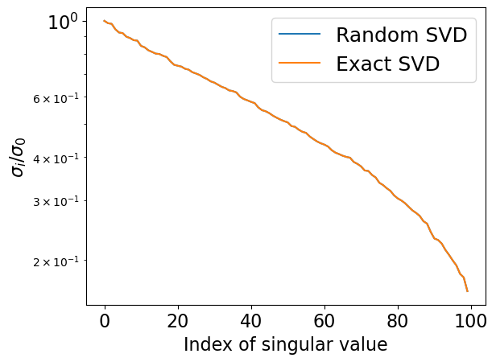

Аналогичное неравенство справедливо и для нижней границы.
Эта оценка намного лучше.
Интересное (и часто упускаемое из виду) свойство стохастического оценщика заключается в том, что он поставляется со стохастической оценкой дисперсии (из выборки!)
Предупреждение: нам все равно нужно \varepsilon^{-2} выборок, чтобы достичь точности \varepsilon при использовании независимых выборок.
Пример результата, где применялось – надо читать исходную статью (original paper)
где A имеет размер m \times n, U имеет размер m \times k и V имеет размер n \times k.
Мы уже знаем, что сложность аппроксимации ранга k составляет O(mnk)
Как мы можем уменьшить эту сложность?
Предположим, что мы знаем ортогональную матрицу Q размера m \times k такую, что
A \approx Q Q^{\top}A
Другими словами, столбцы Q представляют ортогональный базис в пространстве столбцов матрицы A
Тогда следующие детерминированные шаги могут дать факторы U, \Sigma и V, соответствующие SVD матрицы A
Формируем матрицу B = Q^{\top}A размера k \times n
Вычисляем SVD малой матрицы B = \hat{U}\Sigma V^{\top}
Обновляем левые сингулярные векторы U = Q\hat{U}
Если k \ll \min(m, n), то эти шаги можно выполнить быстро
Если Q образует точный базис в пространстве столбцов A, то U, \Sigma и V также будут точными!
Итак, как составить матрицу Q?
Рандомизированная аппроксимация базиса в пространстве столбцов A
Основной подход
Сгенерировать k + p гауссовых векторов размера m и сформировать матрицу G
Вычислить Y = AG
Вычислить QR-разложение Y и использовать полученную матрицу Q как аппроксимацию базиса
Параметр p называется параметром переизбыточности и нужен для улучшения аппроксимации ведущих k левых сингулярных векторов
Вычисление Y может быть выполнено параллельно
Здесь нам нужна только функция умножения матрицы A на вектор, а не её элементы в виде 2D массива - концепция черного ящика!
Вместо гауссовой случайной матрицы можно использовать более структурированную, но все еще случайную матрицу, которую можно быстро умножить на A
import matplotlib.pyplot as pltimport numpy as npn =1000k =100m =200# Lowrank matrixA = np.random.randn(n, k)B = np.random.randn(k, m)A = A @ B# Random matrix# A = np.random.randn(n, m)def randomized_svd(A, rank, p): m, n = A.shape G = np.random.randn(n, rank + p) Y = A @ G Q, _ = np.linalg.qr(Y) B = Q.T @ A u, S, V = np.linalg.svd(B) U = Q @ ureturn U, S, Vrank =100p =5U, S, V = randomized_svd(A, rank, p)print("Error from randomized SVD", np.linalg.norm(A - U[:, :rank] * S[None, :rank] @ V[:rank, :]))plt.semilogy(S[:rank] / S[0], label="Random SVD")u, s, v = np.linalg.svd(A)print("Error from exact SVD", np.linalg.norm(A - u[:, :rank] * s[None, :rank] @ v[:rank, :]))plt.semilogy(s[:rank] / s[0], label="Exact SVD")plt.legend(fontsize=18)plt.xticks(fontsize=16)plt.yticks(fontsize=16)plt.ylabel("$\sigma_i / \sigma_0$", fontsize=16)_ = plt.xlabel("Index of singular value", fontsize=16)
Error from randomized SVD 2.159802807908629e-11
Error from exact SVD 1.3779850607705733e-11

import scipy.sparse.linalg as spsplin# More details about Facebook package for computing randomized SVD is here: https://research.fb.com/blog/2014/09/fast-randomized-svd/ import fbpcan =1000m =200A = np.random.randn(n, m)k =10p =10%timeit spsplin.svds(A, k=k)%timeit randomized_svd(A, k, p)%timeit fbpca.pca(A, k=k, raw=False)
60.5 ms ± 11.5 ms per loop (mean ± std. dev. of 7 runs, 10 loops each)
8.07 ms ± 3.32 ms per loop (mean ± std. dev. of 7 runs, 100 loops each)
3.09 ms ± 177 µs per loop (mean ± std. dev. of 7 runs, 100 loops each)
Можно получить нетривиальные оценки сходимости
Усредненная ошибка представленного алгоритма, где k - целевой ранг, а p - параметр избыточной выборки, следующая - в норме Фробениуса
347 ms ± 60.1 ms per loop (mean ± std. dev. of 7 runs, 1 loop each)
82.3 ms ± 6.93 ms per loop (mean ± std. dev. of 7 runs, 10 loops each)
68.7 ms ± 4.99 ms per loop (mean ± std. dev. of 7 runs, 10 loops each)
118 ms ± 6.57 ms per loop (mean ± std. dev. of 7 runs, 10 loops each)
176 ms ± 13.9 ms per loop (mean ± std. dev. of 7 runs, 10 loops each)
352 ms ± 43.3 ms per loop (mean ± std. dev. of 7 runs, 1 loop each)
Здесь тоже есть теорема сходимости
Представленный выше метод обеспечивает следующую верхнюю границу
Рассмотрим наихудший случай, когда в данной матрице не существует структуры низкого ранга.
Вопрос: какова степень субоптимальности по отношению к теореме Экарта-Янга?
Резюме по рандомизированному SVD
Эффективный метод для получения приближенного SVD
Прост в реализации
Может быть расширен до однопроходного метода, где матрица A нужна только для построения Q
Требует только умножение матрицы на вектор с целевой матрицей
Метод Качмажа (Kaczmarz method) для решения линейных систем позволяет приближенно решать, не считая даже все строки
Мы уже обсудили, как решать переопределенные линейные системы Ax = f в смысле наименьших квадратов
псевдообратная матрица
QR разложение
Еще один подход основан на итеративных проекциях, известный как метод Качмажа или алгебраический метод реконструкции в области вычислительной томографии
Вместо решения всех уравнений, выбираем одно случайно, которое имеет вид
a^{\top}_i x = f_i,
и имея приближение x_k, пытаемся найти x_{k+1} как
x_{k+1} = \arg \min_x \frac12 \Vert x - x_k \Vert^2_2, \quad \mbox{s.t.} \quad a^{\top}_i x = f_i.
Это недорогое обновление, но анализ довольно сложный.
В этом методе можно узнать стохастический градиентный спуск с определенным размером шага, равным \frac{1}{\|a_i\|_2^2} для каждого образца
Теорема сходимости была доказана очень недавно
Предположим, что мы генерируем i согласно распределению по всем доступным индексам пропорционально нормам строк, т.е. \mathbb{P}[i = k] = \frac{\|a_k\|_2^2}{\| A \|^2_F}. Этот метод называется рандомизированным методом Качмажа (RKM)
где \kappa_F(A) = \frac{\| A \|_F}{\sigma_{\min}(A)} и \sigma_{\min}(A) - минимальное ненулевое сингулярное число матрицы A. Этот результат был представлен в работе (Strohmer and Vershynin, 2009)
Если переопределенная линейная система несовместна, то
Хотелось бы поговорить о скетчинге, но это уже другая история
Выборка определенной строки может рассматриваться как частный случай более общего подхода, называемого скетчингом
Идея: заменить матрицу A другой матрицей SA, где матрица SA имеет значительно меньшее количество строк, но сохраняет некоторые важные свойства матрицы A
Возможные варианты:
случайная проекция
случайный выбор строк
Пример: задача линейных наименьших квадратов \|Ax - b\|_2^2 \to \min_x преобразуется в \| (SA)y - Sb \|_2^2 \to \min_y, и мы ожидаем, что x \approx y
Решатель Blendenpick основан на этой идее и превосходит по производительности процедуру LAPACK